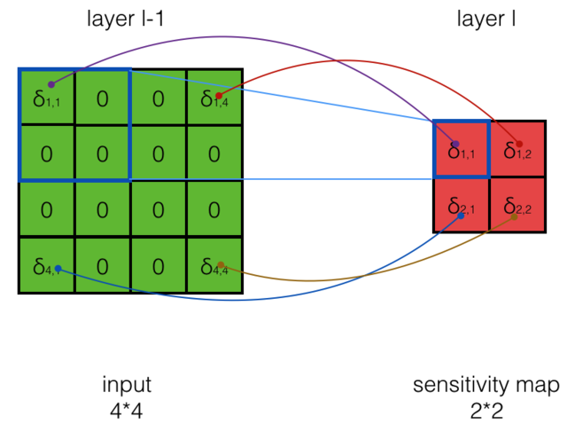

@hanbingtao
2017-08-28T11:53:32.000000Z
字数 28345
阅读 365400
零基础入门深度学习(4) - 卷积神经网络
机器学习 深度学习入门
无论即将到来的是大数据时代还是人工智能时代，亦或是传统行业使用人工智能在云上处理大数据的时代，作为一个有理想有追求的程序员，不懂深度学习（Deep Learning）这个超热的技术，会不会感觉马上就out了？现在救命稻草来了，《零基础入门深度学习》系列文章旨在讲帮助爱编程的你从零基础达到入门级水平。零基础意味着你不需要太多的数学知识，只要会写程序就行了，没错，这是专门为程序员写的文章。虽然文中会有很多公式你也许看不懂，但同时也会有更多的代码，程序员的你一定能看懂的（我周围是一群狂热的Clean Code程序员，所以我写的代码也不会很差）。
文章列表
零基础入门深度学习(1) - 感知器
零基础入门深度学习(2) - 线性单元和梯度下降
零基础入门深度学习(3) - 神经网络和反向传播算法
零基础入门深度学习(4) - 卷积神经网络
零基础入门深度学习(5) - 循环神经网络
零基础入门深度学习(6) - 长短时记忆网络(LSTM)
零基础入门深度学习(7) - 递归神经网络
往期回顾
在前面的文章中，我们介绍了全连接神经网络，以及它的训练和使用。我们用它来识别了手写数字，然而，这种结构的网络对于图像识别任务来说并不是很合适。本文将要介绍一种更适合图像、语音识别任务的神经网络结构——卷积神经网络(Convolutional Neural Network, CNN)。说卷积神经网络是最重要的一种神经网络也不为过，它在最近几年大放异彩，几乎所有图像、语音识别领域的重要突破都是卷积神经网络取得的，比如谷歌的GoogleNet、微软的ResNet等，打败李世石的AlphaGo也用到了这种网络。本文将详细介绍卷积神经网络以及它的训练算法，以及动手实现一个简单的卷积神经网络。
一个新的激活函数——Relu
最近几年卷积神经网络中，激活函数往往不选择sigmoid或tanh函数，而是选择relu函数。Relu函数的定义是：
Relu函数图像如下图所示：
Relu函数作为激活函数，有下面几大优势：
- 速度快 和sigmoid函数需要计算指数和倒数相比，relu函数其实就是一个max(0,x)，计算代价小很多。
- 减轻梯度消失问题 回忆一下计算梯度的公式。其中，是sigmoid函数的导数。在使用反向传播算法进行梯度计算时，每经过一层sigmoid神经元，梯度就要乘上一个。从下图可以看出，函数最大值是1/4。因此，乘一个会导致梯度越来越小，这对于深层网络的训练是个很大的问题。而relu函数的导数是1，不会导致梯度变小。当然，激活函数仅仅是导致梯度减小的一个因素，但无论如何在这方面relu的表现强于sigmoid。使用relu激活函数可以让你训练更深的网络。

- 稀疏性 通过对大脑的研究发现，大脑在工作的时候只有大约5%的神经元是激活的，而采用sigmoid激活函数的人工神经网络，其激活率大约是50%。有论文声称人工神经网络在15%-30%的激活率时是比较理想的。因为relu函数在输入小于0时是完全不激活的，因此可以获得一个更低的激活率。
全连接网络 VS 卷积网络
全连接神经网络之所以不太适合图像识别任务，主要有以下几个方面的问题：
- 参数数量太多 考虑一个输入1000*1000像素的图片(一百万像素，现在已经不能算大图了)，输入层有1000*1000=100万节点。假设第一个隐藏层有100个节点(这个数量并不多)，那么仅这一层就有(1000*1000+1)*100=1亿参数，这实在是太多了！我们看到图像只扩大一点，参数数量就会多很多，因此它的扩展性很差。
- 没有利用像素之间的位置信息 对于图像识别任务来说，每个像素和其周围像素的联系是比较紧密的，和离得很远的像素的联系可能就很小了。如果一个神经元和上一层所有神经元相连，那么就相当于对于一个像素来说，把图像的所有像素都等同看待，这不符合前面的假设。当我们完成每个连接权重的学习之后，最终可能会发现，有大量的权重，它们的值都是很小的(也就是这些连接其实无关紧要)。努力学习大量并不重要的权重，这样的学习必将是非常低效的。
- 网络层数限制 我们知道网络层数越多其表达能力越强，但是通过梯度下降方法训练深度全连接神经网络很困难，因为全连接神经网络的梯度很难传递超过3层。因此，我们不可能得到一个很深的全连接神经网络，也就限制了它的能力。
那么，卷积神经网络又是怎样解决这个问题的呢？主要有三个思路：
- 局部连接 这个是最容易想到的，每个神经元不再和上一层的所有神经元相连，而只和一小部分神经元相连。这样就减少了很多参数。
- 权值共享 一组连接可以共享同一个权重，而不是每个连接有一个不同的权重，这样又减少了很多参数。
- 下采样 可以使用Pooling来减少每层的样本数，进一步减少参数数量，同时还可以提升模型的鲁棒性。
对于图像识别任务来说，卷积神经网络通过尽可能保留重要的参数，去掉大量不重要的参数，来达到更好的学习效果。
接下来，我们将详述卷积神经网络到底是何方神圣。
卷积神经网络是啥
首先，我们先获取一个感性认识，下图是一个卷积神经网络的示意图：

网络架构
如图1所示，一个卷积神经网络由若干卷积层、Pooling层、全连接层组成。你可以构建各种不同的卷积神经网络，它的常用架构模式为：
INPUT -> [[CONV]*N -> POOL?]*M -> [FC]*K
也就是N个卷积层叠加，然后(可选)叠加一个Pooling层，重复这个结构M次，最后叠加K个全连接层。
对于图1展示的卷积神经网络：
INPUT -> CONV -> POOL -> CONV -> POOL -> FC -> FC
按照上述模式可以表示为：
INPUT -> [[CONV]*1 -> POOL]*2 -> [FC]*2
也就是：N=1, M=2, K=2。
三维的层结构
从图1我们可以发现卷积神经网络的层结构和全连接神经网络的层结构有很大不同。全连接神经网络每层的神经元是按照一维排列的，也就是排成一条线的样子；而卷积神经网络每层的神经元是按照三维排列的，也就是排成一个长方体的样子，有宽度、高度和深度。
对于图1展示的神经网络，我们看到输入层的宽度和高度对应于输入图像的宽度和高度，而它的深度为1。接着，第一个卷积层对这幅图像进行了卷积操作(后面我们会讲如何计算卷积)，得到了三个Feature Map。这里的"3"可能是让很多初学者迷惑的地方，实际上，就是这个卷积层包含三个Filter，也就是三套参数，每个Filter都可以把原始输入图像卷积得到一个Feature Map，三个Filter就可以得到三个Feature Map。至于一个卷积层可以有多少个Filter，那是可以自由设定的。也就是说，卷积层的Filter个数也是一个超参数。我们可以把Feature Map可以看做是通过卷积变换提取到的图像特征，三个Filter就对原始图像提取出三组不同的特征，也就是得到了三个Feature Map，也称做三个通道(channel)。
继续观察图1，在第一个卷积层之后，Pooling层对三个Feature Map做了下采样(后面我们会讲如何计算下采样)，得到了三个更小的Feature Map。接着，是第二个卷积层，它有5个Filter。每个Fitler都把前面下采样之后的3个**Feature Map卷积在一起，得到一个新的Feature Map。这样，5个Filter就得到了5个Feature Map。接着，是第二个Pooling，继续对5个Feature Map进行下采样**，得到了5个更小的Feature Map。
图1所示网络的最后两层是全连接层。第一个全连接层的每个神经元，和上一层5个Feature Map中的每个神经元相连，第二个全连接层(也就是输出层)的每个神经元，则和第一个全连接层的每个神经元相连，这样得到了整个网络的输出。
至此，我们对卷积神经网络有了最基本的感性认识。接下来，我们将介绍卷积神经网络中各种层的计算和训练。
卷积神经网络输出值的计算
卷积层输出值的计算
我们用一个简单的例子来讲述如何计算卷积，然后，我们抽象出卷积层的一些重要概念和计算方法。
假设有一个5*5的图像，使用一个3*3的filter进行卷积，想得到一个3*3的Feature Map，如下所示：
为了清楚的描述卷积计算过程，我们首先对图像的每个像素进行编号，用表示图像的第行第列元素；对filter的每个权重进行编号，用表示第行第列权重，用表示filter的偏置项；对Feature Map的每个元素进行编号，用表示Feature Map的第行第列元素；用表示激活函数(这个例子选择relu函数作为激活函数)。然后，使用下列公式计算卷积：
例如，对于Feature Map左上角元素来说，其卷积计算方法为：
计算结果如下图所示：
接下来，Feature Map的元素的卷积计算方法为：
计算结果如下图所示：
可以依次计算出Feature Map中所有元素的值。下面的动画显示了整个Feature Map的计算过程：

上面的计算过程中，步幅(stride)为1。步幅可以设为大于1的数。例如，当步幅为2时，Feature Map计算如下：

我们注意到，当步幅设置为2的时候，Feature Map就变成2*2了。这说明图像大小、步幅和卷积后的Feature Map大小是有关系的。事实上，它们满足下面的关系：
在上面两个公式中，是卷积后Feature Map的宽度；是卷积前图像的宽度；是filter的宽度；是Zero Padding数量，Zero Padding是指在原始图像周围补几圈0，如果的值是1，那么就补1圈0；是步幅；是卷积后Feature Map的高度；是卷积前图像的宽度。式2和式3本质上是一样的。
以前面的例子来说，图像宽度，filter宽度，Zero Padding，步幅，则
说明Feature Map宽度是2。同样，我们也可以计算出Feature Map高度也是2。
前面我们已经讲了深度为1的卷积层的计算方法，如果深度大于1怎么计算呢？其实也是类似的。如果卷积前的图像深度为D，那么相应的filter的深度也必须为D。我们扩展一下式1，得到了深度大于1的卷积计算公式：
在式4中，D是深度；F是filter的大小(宽度或高度，两者相同)；表示filter的第层第行第列权重；表示图像的第层第行第列像素；其它的符号含义和式1是相同的，不再赘述。
我们前面还曾提到，每个卷积层可以有多个filter。每个filter和原始图像进行卷积后，都可以得到一个Feature Map。因此，卷积后Feature Map的深度(个数)和卷积层的filter个数是相同的。
下面的动画显示了包含两个filter的卷积层的计算。我们可以看到7*7*3输入，经过两个3*3*3filter的卷积(步幅为2)，得到了3*3*2的输出。另外我们也会看到下图的Zero padding是1，也就是在输入元素的周围补了一圈0。Zero padding对于图像边缘部分的特征提取是很有帮助的。

以上就是卷积层的计算方法。这里面体现了局部连接和权值共享：每层神经元只和上一层部分神经元相连(卷积计算规则)，且filter的权值对于上一层所有神经元都是一样的。对于包含两个3*3*3的fitler的卷积层来说，其参数数量仅有(3*3*3+1)*2=56个，且参数数量与上一层神经元个数无关。与全连接神经网络相比，其参数数量大大减少了。
用卷积公式来表达卷积层计算
不想了解太多数学细节的读者可以跳过这一节，不影响对全文的理解。
式4的表达很是繁冗，最好能简化一下。就像利用矩阵可以简化表达全连接神经网络的计算一样，我们利用卷积公式可以简化卷积神经网络的表达。
下面我们介绍二维卷积公式。
设矩阵，，其行、列数分别为、、、，则二维卷积公式如下：
且,满足条件。
我们可以把上式写成
如果我们按照式5来计算卷积，我们可以发现矩阵A实际上是filter，而矩阵B是待卷积的输入，位置关系也有所不同：
从上图可以看到，A左上角的值与B对应区块中右下角的值相乘，而不是与左上角的相乘。因此，数学中的卷积和卷积神经网络中的『卷积』还是有区别的，为了避免混淆，我们把卷积神经网络中的『卷积』操作叫做互相关(cross-correlation)操作。
卷积和互相关操作是可以转化的。首先，我们把矩阵A翻转180度，然后再交换A和B的位置（即把B放在左边而把A放在右边。卷积满足交换率，这个操作不会导致结果变化），那么卷积就变成了互相关。
如果我们不去考虑两者这么一点点的区别，我们可以把式5代入到式4：
其中，是卷积层输出的feature map。同式4相比，式6就简单多了。然而，这种简洁写法只适合步长为1的情况。
Pooling层输出值的计算
Pooling层主要的作用是下采样，通过去掉Feature Map中不重要的样本，进一步减少参数数量。Pooling的方法很多，最常用的是Max Pooling。Max Pooling实际上就是在n*n的样本中取最大值，作为采样后的样本值。下图是2*2 max pooling：
除了Max Pooing之外，常用的还有Mean Pooling——取各样本的平均值。
对于深度为D的Feature Map，各层独立做Pooling，因此Pooling后的深度仍然为D。
全连接层
全连接层输出值的计算和上一篇文章零基础入门深度学习(3) - 神经网络和反向传播算法讲过的全连接神经网络是一样的，这里就不再赘述了。
卷积神经网络的训练
和全连接神经网络相比，卷积神经网络的训练要复杂一些。但训练的原理是一样的：利用链式求导计算损失函数对每个权重的偏导数（梯度），然后根据梯度下降公式更新权重。训练算法依然是反向传播算法。
我们先回忆一下上一篇文章零基础入门深度学习(3) - 神经网络和反向传播算法介绍的反向传播算法，整个算法分为三个步骤：
- 前向计算每个神经元的输出值（表示网络的第个神经元，以下同）；
- 反向计算每个神经元的误差项，在有的文献中也叫做敏感度(sensitivity)。它实际上是网络的损失函数对神经元加权输入的偏导数，即；
- 计算每个神经元连接权重的梯度（表示从神经元连接到神经元的权重），公式为，其中，表示神经元的输出。
最后，根据梯度下降法则更新每个权重即可。
对于卷积神经网络，由于涉及到局部连接、下采样的等操作，影响到了第二步误差项的具体计算方法，而权值共享影响了第三步权重的梯度的计算方法。接下来，我们分别介绍卷积层和Pooling层的训练算法。
卷积层的训练
对于卷积层，我们先来看看上面的第二步，即如何将误差项传递到上一层；然后再来看看第三步，即如何计算filter每个权值的梯度。
卷积层误差项的传递
最简单情况下误差项的传递
我们先来考虑步长为1、输入的深度为1、filter个数为1的最简单的情况。
假设输入的大小为3*3，filter大小为2*2，按步长为1卷积，我们将得到2*2的feature map。如下图所示：
在上图中，为了描述方便，我们为每个元素都进行了编号。用表示第层第行第列的误差项；用表示filter第行第列权重，用表示filter的偏置项；用表示第层第行第列神经元的输出；用表示第行神经元的加权输入；用表示第层第行第列的误差项；用表示第层的激活函数。它们之间的关系如下：
上式中，、、都是数组，是由组成的数组，表示卷积操作。
在这里，我们假设第中的每个值都已经算好，我们要做的是计算第层每个神经元的误差项。
根据链式求导法则：
我们先求第一项。我们先来看几个特例，然后从中总结出一般性的规律。
例1，计算，仅与的计算有关：
因此：
例2，计算，与和的计算都有关：
因此：
例3，计算，与、、和的计算都有关：
因此：
从上面三个例子，我们发挥一下想象力，不难发现，计算，相当于把第层的sensitive map周围补一圈0，在与180度翻转后的filter进行cross-correlation，就能得到想要结果，如下图所示：
因为卷积相当于将filter旋转180度的cross-correlation，因此上图的计算可以用卷积公式完美的表达：
上式中的表示第层的filter的权重数组。也可以把上式的卷积展开，写成求和的形式：
现在，我们再求第二项。因为
所以这一项极其简单，仅求激活函数的导数就行了。
将第一项和第二项组合起来，我们得到最终的公式：
也可以将式7写成卷积的形式：
其中，符号表示element-wise product，即将矩阵中每个对应元素相乘。注意式8中的、、都是矩阵。
以上就是步长为1、输入的深度为1、filter个数为1的最简单的情况，卷积层误差项传递的算法。下面我们来推导一下步长为S的情况。
卷积步长为S时的误差传递
我们先来看看步长为S与步长为1的差别。
如上图，上面是步长为1时的卷积结果，下面是步长为2时的卷积结果。我们可以看出，因为步长为2，得到的feature map跳过了步长为1时相应的部分。因此，当我们反向计算误差项时，我们可以对步长为S的sensitivity map相应的位置进行补0，将其『还原』成步长为1时的sensitivity map，再用式8进行求解。
输入层深度为D时的误差传递
当输入深度为D时，filter的深度也必须为D，层的通道只与filter的通道的权重进行计算。因此，反向计算误差项时，我们可以使用式8，用filter的第通道权重对第层sensitivity map进行卷积，得到第层通道的sensitivity map。如下图所示：
filter数量为N时的误差传递
filter数量为N时，输出层的深度也为N，第个filter卷积产生输出层的第个feature map。由于第层每个加权输入都同时影响了第层所有feature map的输出值，因此，反向计算误差项时，需要使用全导数公式。也就是，我们先使用第个filter对第层相应的第个sensitivity map进行卷积，得到一组N个层的偏sensitivity map。依次用每个filter做这种卷积，就得到D组偏sensitivity map。最后在各组之间将N个偏sensitivity map 按元素相加，得到最终的N个层的sensitivity map：
以上就是卷积层误差项传递的算法，如果读者还有所困惑，可以参考后面的代码实现来理解。
卷积层filter权重梯度的计算
我们要在得到第层sensitivity map的情况下，计算filter的权重的梯度，由于卷积层是权重共享的，因此梯度的计算稍有不同。
如上图所示，是第层的输出，是第层filter的权重，是第层的sensitivity map。我们的任务是计算的梯度，即。
为了计算偏导数，我们需要考察权重对的影响。权重项通过影响的值，进而影响。我们仍然通过几个具体的例子来看权重项对的影响，然后再从中总结出规律。
例1，计算：
从上面的公式看出，由于权值共享，权值对所有的都有影响。是、、...的函数，而、、...又是的函数，根据全导数公式，计算就是要把每个偏导数都加起来：
例2，计算：
通过查看与的关系，我们很容易得到：
实际上，每个权重项都是类似的，我们不一一举例了。现在，是我们再次发挥想象力的时候，我们发现计算规律是：
也就是用sensitivity map作为卷积核，在input上进行cross-correlation，如下图所示：
最后，我们来看一看偏置项的梯度。通过查看前面的公式，我们很容易发现：
也就是偏置项的梯度就是sensitivity map所有误差项之和。
对于步长为S的卷积层，处理方法与传递**误差项*是一样的，首先将sensitivity map『还原』成步长为1时的sensitivity map，再用上面的方法进行计算。
获得了所有的梯度之后，就是根据梯度下降算法来更新每个权重。这在前面的文章中已经反复写过，这里就不再重复了。
至此，我们已经解决了卷积层的训练问题，接下来我们看一看Pooling层的训练。
Pooling层的训练
无论max pooling还是mean pooling，都没有需要学习的参数。因此，在卷积神经网络的训练中，Pooling层需要做的仅仅是将误差项传递到上一层，而没有梯度的计算。
Max Pooling误差项的传递
如下图，假设第层大小为4*4，pooling filter大小为2*2，步长为2，这样，max pooling之后，第层大小为2*2。假设第层的值都已经计算完毕，我们现在的任务是计算第层的值。
我们用表示第层的加权输入；用表示第层的加权输入。我们先来考察一个具体的例子，然后再总结一般性的规律。对于max pooling：
也就是说，只有区块中最大的才会对的值产生影响。我们假设最大的值是，则上式相当于：
那么，我们不难求得下面几个偏导数：
因此：
而：
现在，我们发现了规律：对于max pooling，下一层的误差项的值会原封不动的传递到上一层对应区块中的最大值所对应的神经元，而其他神经元的误差项的值都是0。如下图所示(假设、、、为所在区块中的最大输出值)：

Mean Pooling误差项的传递
我们还是用前面屡试不爽的套路，先研究一个特殊的情形，再扩展为一般规律。
如上图，我们先来考虑计算。我们先来看看如何影响。
根据上式，我们一眼就能看出来：
所以，根据链式求导法则，我们不难算出：
同样，我们可以算出、、：
现在，我们发现了规律：对于mean pooling，下一层的误差项的值会平均分配到上一层对应区块中的所有神经元。如下图所示：
上面这个算法可以表达为高大上的克罗内克积(Kronecker product)的形式，有兴趣的读者可以研究一下。
其中，是pooling层filter的大小，、都是矩阵。
至此，我们已经把卷积层、Pooling层的训练算法介绍完毕，加上上一篇文章讲的全连接层训练算法，您应该已经具备了编写卷积神经网络代码所需要的知识。为了加深对知识的理解，接下来，我们将展示如何实现一个简单的卷积神经网络。
卷积神经网络的实现
完整代码请参考GitHub: https://github.com/hanbt/learn_dl/blob/master/cnn.py (python2.7)
现在，我们亲自动手实现一个卷积神经网络，以便巩固我们所学的知识。
首先，我们要改变一下代码的架构，『层』成为了我们最核心的组件。这是因为卷积神经网络有不同的层，而每种层的算法都在对应的类中实现。
这次，我们用到了在python中编写算法经常会用到的numpy包。为了使用numpy，我们需要先将numpy导入：
import numpy as np
卷积层的实现
卷积层初始化
我们用ConvLayer类来实现一个卷积层。下面的代码是初始化一个卷积层，可以在构造函数中设置卷积层的超参数。
class ConvLayer(object):def __init__(self, input_width, input_height,channel_number, filter_width,filter_height, filter_number,zero_padding, stride, activator,learning_rate):self.input_width = input_widthself.input_height = input_heightself.channel_number = channel_numberself.filter_width = filter_widthself.filter_height = filter_heightself.filter_number = filter_numberself.zero_padding = zero_paddingself.stride = strideself.output_width = \ConvLayer.calculate_output_size(self.input_width, filter_width, zero_padding,stride)self.output_height = \ConvLayer.calculate_output_size(self.input_height, filter_height, zero_padding,stride)self.output_array = np.zeros((self.filter_number,self.output_height, self.output_width))self.filters = []for i in range(filter_number):self.filters.append(Filter(filter_width,filter_height, self.channel_number))self.activator = activatorself.learning_rate = learning_rate
calculate_output_size函数用来确定卷积层输出的大小，其实现如下：
@staticmethoddef calculate_output_size(input_size,filter_size, zero_padding, stride):return (input_size - filter_size +2 * zero_padding) / stride + 1
Filter类保存了卷积层的参数以及梯度，并且实现了用梯度下降算法来更新参数。
class Filter(object):def __init__(self, width, height, depth):self.weights = np.random.uniform(-1e-4, 1e-4,(depth, height, width))self.bias = 0self.weights_grad = np.zeros(self.weights.shape)self.bias_grad = 0def __repr__(self):return 'filter weights:\n%s\nbias:\n%s' % (repr(self.weights), repr(self.bias))def get_weights(self):return self.weightsdef get_bias(self):return self.biasdef update(self, learning_rate):self.weights -= learning_rate * self.weights_gradself.bias -= learning_rate * self.bias_grad
我们对参数的初始化采用了常用的策略，即：权重随机初始化为一个很小的值，而偏置项初始化为0。
Activator类实现了激活函数，其中，forward方法实现了前向计算，而backward方法则是计算导数。比如，relu函数的实现如下：
class ReluActivator(object):def forward(self, weighted_input):#return weighted_inputreturn max(0, weighted_input)def backward(self, output):return 1 if output > 0 else 0
卷积层前向计算的实现
ConvLayer类的forward方法实现了卷积层的前向计算（即计算根据输入来计算卷积层的输出），下面是代码实现：
def forward(self, input_array):'''计算卷积层的输出输出结果保存在self.output_array'''self.input_array = input_arrayself.padded_input_array = padding(input_array,self.zero_padding)for f in range(self.filter_number):filter = self.filters[f]conv(self.padded_input_array,filter.get_weights(), self.output_array[f],self.stride, filter.get_bias())element_wise_op(self.output_array,self.activator.forward)
上面的代码里面包含了几个工具函数。element_wise_op函数实现了对numpy数组进行按元素操作，并将返回值写回到数组中，代码如下：
# 对numpy数组进行element wise操作def element_wise_op(array, op):for i in np.nditer(array,op_flags=['readwrite']):i[...] = op(i)
conv函数实现了2维和3维数组的卷积，代码如下：
def conv(input_array,kernel_array,output_array,stride, bias):'''计算卷积，自动适配输入为2D和3D的情况'''channel_number = input_array.ndimoutput_width = output_array.shape[1]output_height = output_array.shape[0]kernel_width = kernel_array.shape[-1]kernel_height = kernel_array.shape[-2]for i in range(output_height):for j in range(output_width):output_array[i][j] = (get_patch(input_array, i, j, kernel_width,kernel_height, stride) * kernel_array).sum() + bias
padding函数实现了zero padding操作：
# 为数组增加Zero paddingdef padding(input_array, zp):'''为数组增加Zero padding，自动适配输入为2D和3D的情况'''if zp == 0:return input_arrayelse:if input_array.ndim == 3:input_width = input_array.shape[2]input_height = input_array.shape[1]input_depth = input_array.shape[0]padded_array = np.zeros((input_depth,input_height + 2 * zp,input_width + 2 * zp))padded_array[:,zp : zp + input_height,zp : zp + input_width] = input_arrayreturn padded_arrayelif input_array.ndim == 2:input_width = input_array.shape[1]input_height = input_array.shape[0]padded_array = np.zeros((input_height + 2 * zp,input_width + 2 * zp))padded_array[zp : zp + input_height,zp : zp + input_width] = input_arrayreturn padded_array
卷积层反向传播算法的实现
现在，是介绍卷积层核心算法的时候了。我们知道反向传播算法需要完成几个任务：
- 将误差项传递到上一层。
- 计算每个参数的梯度。
- 更新参数。
以下代码都是在ConvLayer类中实现。我们先来看看将误差项传递到上一层的代码实现。
def bp_sensitivity_map(self, sensitivity_array,activator):'''计算传递到上一层的sensitivity mapsensitivity_array: 本层的sensitivity mapactivator: 上一层的激活函数'''# 处理卷积步长，对原始sensitivity map进行扩展expanded_array = self.expand_sensitivity_map(sensitivity_array)# full卷积，对sensitivitiy map进行zero padding# 虽然原始输入的zero padding单元也会获得残差# 但这个残差不需要继续向上传递，因此就不计算了expanded_width = expanded_array.shape[2]zp = (self.input_width +self.filter_width - 1 - expanded_width) / 2padded_array = padding(expanded_array, zp)# 初始化delta_array，用于保存传递到上一层的# sensitivity mapself.delta_array = self.create_delta_array()# 对于具有多个filter的卷积层来说，最终传递到上一层的# sensitivity map相当于所有的filter的# sensitivity map之和for f in range(self.filter_number):filter = self.filters[f]# 将filter权重翻转180度flipped_weights = np.array(map(lambda i: np.rot90(i, 2),filter.get_weights()))# 计算与一个filter对应的delta_arraydelta_array = self.create_delta_array()for d in range(delta_array.shape[0]):conv(padded_array[f], flipped_weights[d],delta_array[d], 1, 0)self.delta_array += delta_array# 将计算结果与激活函数的偏导数做element-wise乘法操作derivative_array = np.array(self.input_array)element_wise_op(derivative_array,activator.backward)self.delta_array *= derivative_array
expand_sensitivity_map方法就是将步长为S的sensitivity map『还原』为步长为1的sensitivity map，代码如下：
def expand_sensitivity_map(self, sensitivity_array):depth = sensitivity_array.shape[0]# 确定扩展后sensitivity map的大小# 计算stride为1时sensitivity map的大小expanded_width = (self.input_width -self.filter_width + 2 * self.zero_padding + 1)expanded_height = (self.input_height -self.filter_height + 2 * self.zero_padding + 1)# 构建新的sensitivity_mapexpand_array = np.zeros((depth, expanded_height,expanded_width))# 从原始sensitivity map拷贝误差值for i in range(self.output_height):for j in range(self.output_width):i_pos = i * self.stridej_pos = j * self.strideexpand_array[:,i_pos,j_pos] = \sensitivity_array[:,i,j]return expand_array
create_delta_array是创建用来保存传递到上一层的sensitivity map的数组。
def create_delta_array(self):return np.zeros((self.channel_number,self.input_height, self.input_width))
接下来，是计算梯度的代码。
def bp_gradient(self, sensitivity_array):# 处理卷积步长，对原始sensitivity map进行扩展expanded_array = self.expand_sensitivity_map(sensitivity_array)for f in range(self.filter_number):# 计算每个权重的梯度filter = self.filters[f]for d in range(filter.weights.shape[0]):conv(self.padded_input_array[d],expanded_array[f],filter.weights_grad[d], 1, 0)# 计算偏置项的梯度filter.bias_grad = expanded_array[f].sum()
最后，是按照梯度下降算法更新参数的代码，这部分非常简单。
def update(self):'''按照梯度下降，更新权重'''for filter in self.filters:filter.update(self.learning_rate)
卷积层的梯度检查
为了验证我们的公式推导和代码实现的正确性，我们必须要对卷积层进行梯度检查。下面是代吗实现：
def init_test():a = np.array([[[0,1,1,0,2],[2,2,2,2,1],[1,0,0,2,0],[0,1,1,0,0],[1,2,0,0,2]],[[1,0,2,2,0],[0,0,0,2,0],[1,2,1,2,1],[1,0,0,0,0],[1,2,1,1,1]],[[2,1,2,0,0],[1,0,0,1,0],[0,2,1,0,1],[0,1,2,2,2],[2,1,0,0,1]]])b = np.array([[[0,1,1],[2,2,2],[1,0,0]],[[1,0,2],[0,0,0],[1,2,1]]])cl = ConvLayer(5,5,3,3,3,2,1,2,IdentityActivator(),0.001)cl.filters[0].weights = np.array([[[-1,1,0],[0,1,0],[0,1,1]],[[-1,-1,0],[0,0,0],[0,-1,0]],[[0,0,-1],[0,1,0],[1,-1,-1]]], dtype=np.float64)cl.filters[0].bias=1cl.filters[1].weights = np.array([[[1,1,-1],[-1,-1,1],[0,-1,1]],[[0,1,0],[-1,0,-1],[-1,1,0]],[[-1,0,0],[-1,0,1],[-1,0,0]]], dtype=np.float64)return a, b, cldef gradient_check():'''梯度检查'''# 设计一个误差函数，取所有节点输出项之和error_function = lambda o: o.sum()# 计算forward值a, b, cl = init_test()cl.forward(a)# 求取sensitivity map，是一个全1数组sensitivity_array = np.ones(cl.output_array.shape,dtype=np.float64)# 计算梯度cl.backward(a, sensitivity_array,IdentityActivator())# 检查梯度epsilon = 10e-4for d in range(cl.filters[0].weights_grad.shape[0]):for i in range(cl.filters[0].weights_grad.shape[1]):for j in range(cl.filters[0].weights_grad.shape[2]):cl.filters[0].weights[d,i,j] += epsiloncl.forward(a)err1 = error_function(cl.output_array)cl.filters[0].weights[d,i,j] -= 2*epsiloncl.forward(a)err2 = error_function(cl.output_array)expect_grad = (err1 - err2) / (2 * epsilon)cl.filters[0].weights[d,i,j] += epsilonprint 'weights(%d,%d,%d): expected - actural %f - %f' % (d, i, j, expect_grad, cl.filters[0].weights_grad[d,i,j])
上面代码值得思考的地方在于，传递给卷积层的sensitivity map是全1数组，留给读者自己推导一下为什么是这样（提示：激活函数选择了identity函数：）。读者如果还有困惑，请写在文章评论中，我会回复。
运行上面梯度检查的代码，我们得到的输出如下，期望的梯度和实际计算出的梯度一致，这证明我们的算法推导和代码实现确实是正确的。
以上就是卷积层的实现。
Max Pooling层的实现
max pooling层的实现相对简单，我们直接贴出全部代码如下：
class MaxPoolingLayer(object):def __init__(self, input_width, input_height,channel_number, filter_width,filter_height, stride):self.input_width = input_widthself.input_height = input_heightself.channel_number = channel_numberself.filter_width = filter_widthself.filter_height = filter_heightself.stride = strideself.output_width = (input_width -filter_width) / self.stride + 1self.output_height = (input_height -filter_height) / self.stride + 1self.output_array = np.zeros((self.channel_number,self.output_height, self.output_width))def forward(self, input_array):for d in range(self.channel_number):for i in range(self.output_height):for j in range(self.output_width):self.output_array[d,i,j] = (get_patch(input_array[d], i, j,self.filter_width,self.filter_height,self.stride).max())def backward(self, input_array, sensitivity_array):self.delta_array = np.zeros(input_array.shape)for d in range(self.channel_number):for i in range(self.output_height):for j in range(self.output_width):patch_array = get_patch(input_array[d], i, j,self.filter_width,self.filter_height,self.stride)k, l = get_max_index(patch_array)self.delta_array[d,i * self.stride + k,j * self.stride + l] = \sensitivity_array[d,i,j]
全连接层的实现和上一篇文章类似，在此就不再赘述了。至此，你已经拥有了实现了一个简单的卷积神经网络所需要的基本组件。对于卷积神经网络，现在有很多优秀的开源实现，因此我们并不需要真的自己去实现一个。贴出这些代码的目的是为了让我们更好的了解卷积神经网络的基本原理。
卷积神经网络的应用
MNIST手写数字识别
LeNet-5是实现手写数字识别的卷积神经网络，在MNIST测试集上，它取得了0.8%的错误率。LeNet-5的结构如下：
关于LeNet-5的详细介绍，网上的资料很多，因此就不再重复了。感兴趣的读者可以尝试用我们自己实现的卷积神经网络代码去构造并训练LeNet-5（当然代码会更复杂一些）。
小节
由于卷积神经网络的复杂性，我们写出了整个系列目前为止最长的一篇文章，相信读者也和作者一样累的要死。卷积神经网络是深度学习最重要的工具（我犹豫要不要写上『之一』呢），付出一些辛苦去理解它也是值得的。如果您真正理解了本文的内容，相当于迈过了入门深度学习最重要的一到门槛。在下一篇文章中，我们介绍深度学习另外一种非常重要的工具：循环神经网络，届时我们的系列文章也将完成过半。每篇文章都是一个过滤器，对于坚持到这里的读者们，入门深度学习曙光已现，加油。
参考资料
- CS231n Convolutional Neural Networks for Visual Recognition
- ReLu (Rectified Linear Units) 激活函数
- Jake Bouvrie, Notes on Convolutional Neural Networks, 2006
- Ian Goodfellow, Yoshua Bengio, Aaron Courville, Deep Learning, MIT Press, 2016